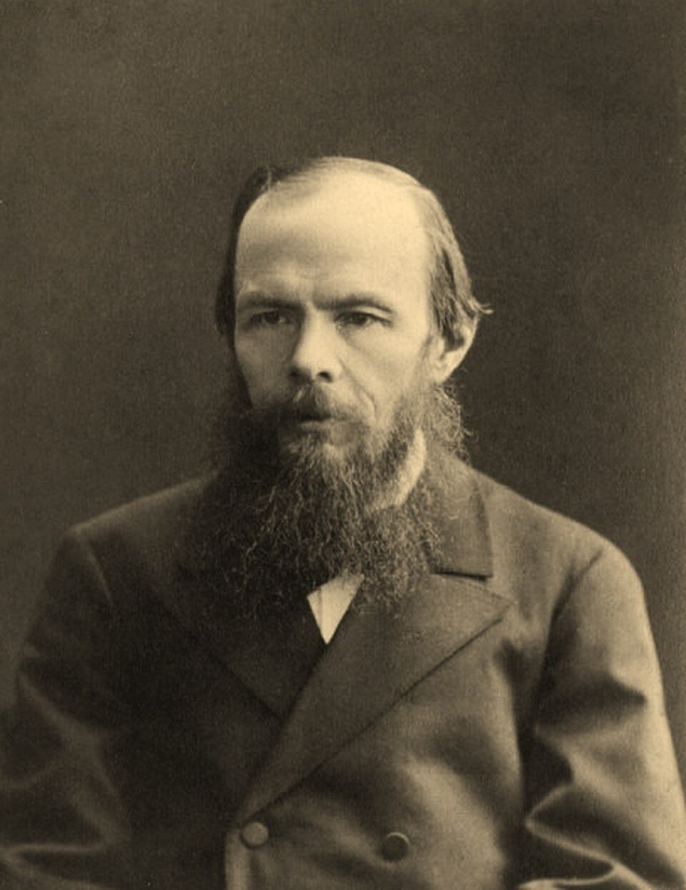

¿Quién fue Fiódor Dostoievski?
Fiódor Mijáilovich Dostoievski nació en Moscú en 1821 y murió en San Petersburgo en 1881. Estudió ingeniería militar, pero pronto se dedicó por completo a la literatura. En 1849 fue arrestado por participar en un círculo de discusión política y condenado a muerte; la pena se conmutó a último momento por cuatro años de trabajos forzados en Siberia, una experiencia que marcaría toda su obra posterior. Vivió además con epilepsia y problemas económicos crónicos durante buena parte de su vida.
